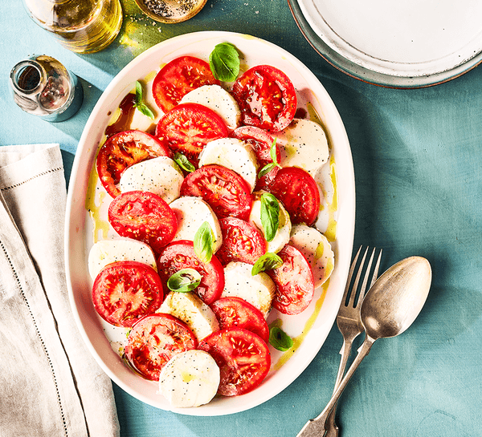

Caprese salad

A caprese salad is a summer classic for a reason. You can only make it if your tomatoes are ripe and
juicy, otherwise it will be a sad and disapointing dish. Good quality olive oil, balsamic and mozzerella
are also important for making sure the dish does not taste bland.
Ingredients
- A small bunch of basil
- 4 balls of mozzerella
- 20 medium sized ripe tomatoes
- 8 tbsp extra vigin olive oil
- Balsamic vinegar
Steps
-
Slice 5 tomatoes into roughly half cm slices, and put the slices onto a dinner plate, then repeat
three times. Add a sprinkle of salt over the tomatoes and drizzle over the olive oil, then leave for
10 minutes.
-
Tear apart a ball of mozzerella into small chunks, then add this to one of the tomato plates.
Repeat three times.
-
Add around 5-10 basil leaves to each plate depending on how big your bunch is, then add a small drizzle of
balsamic vinegar. Enjoy!